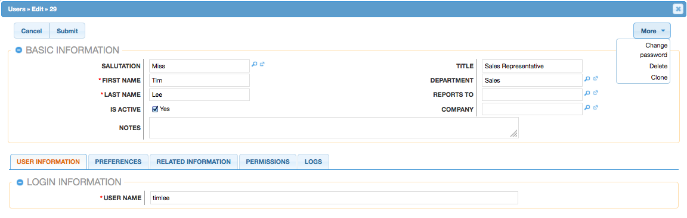

User
Regular User
A regular user is the most common of the user types. A majority of employees of an organization will be regular users. This user can access most MaaxFrame modules and perform most every day-to-day function. Regular users are subject to be restricted in their abilities and what records they can access by an administrator using the Group and Roles functionalities in Maax.
Regular Users will appear in the User module.
System Administrator
System Administrator users, or "admins," have all of the abilities and functionality of a regular user, but also have administrative privileges as well. Admins can perform functions such as creating and editing users, editing system wide settings, and have access to diagnostic and troubleshooting tools. In addition, admins can access all modules and records, and are not subject to group or role restrictions. All instances of Maax require at least one administrator, but it is also recommended to have more than one incase the original admin is for some reason unavailable or is no longer with the company.
System Administrators will appear in the Employees module.To create a System Administrator, please review the Regular And Admin Users section of this documentation.
Creating Users
There are two methods for creating new users in MaaxFrame. These are via the users module, duplication. Creating users is an imperative function in MaaxFrame as it allows for other members of your organization to log in to MaaxFrame and access all of your customer data
- Creating Via User Menu
The most common method for creating new users is via the create new options in Users Menu. This will open an edit view screen where you can enter in all of the necessary information to create a new user. - Creating Via Cloning
Maaxframe have a very imperative cloning functionality where you have to just click on clone button and all its attribute like role, groups, permission etc from the record you are cloning.
if you want to clone a user click on the user you want to clone.
Click on clone under more

The record will be cloned with all its attribute you can change its attribute according to your need and there you go you have just set up a user.
Regular and Admin Users

Regular and Admin users are the most common users that will be created in a Maax instance and contain the most detail and fields compared to the other user types. For more information about the use of Regular and Admin users, please review the Regular User and System Administrator sections of this documentation.
To create a new user, follow these steps:
- Navigate to Access Control > Users.
- Click on create option for the User.
- Enter appropriate values for the fields in the edit view layout. All required fields are marked with a red asterisk and must be completed prior to saving.
-
Enter the following information under the User Profile tab:
- In "User Profile" enter a username for this user which will define the specific user in Maaxframe and should be unique for every user. MaaxFrame will set user default to being Active User.
- In "User Information", contact information and other specific information about the user can be added. This will include phone numbers, contact address, the user's department and job title, and any description information.
- To give the menu permissions you have to assign specific roles. MaaxFrame provide some pre-configured organizational roles.
Roles
Overview
MaaxFrame Roles define permissions for users such as what kinds of records they can access and what level of access they are allowed. Roles work in conjunction with groups to form a robust security model for non-admin users in MaaxFrame. Roles control three different layers of access for users within MaaxFrame: module, field, and action-level access.
Administrators have the ability to create different roles and assign regular users to the roles. A user can be associated to any number of roles, and when multiple roles are applied, MaaxFrame adheres to a most-restrictive policy to determine the user's appropriate access levels. Administrators cannot be associated to roles as their administrative rights supersede any restrictions imposed by Role Management. For more information on System Administrator users, please review the User Management documentation.
Roles Modules Tab
The Roles module tab is accessed by navigating to the Admin menu and clicking "Role Management" within the Users panel. Clicking the link will open the Roles module where you will see the tree view of the Roles. You can define the roles in hierarchical structure as per your organization
Creating Roles
There are three methods that can be used to create roles in MaaxFrame: via the Create Role option, by Cloning then editing an existing role or by adding directly via tree actions . After initially creating the role, the administrator will need to set the necessary module and field permissions, and assign users to the role.
- Creating Roles Via Roles Menu The most common way to create a role is via the Create Role option in the Role Management module tab. This opens up the edit view layout which allows you to enter in all the relevant information for the role.
- Navigate to the Settings -> Access Controls -> Roles.
- The Roles tree view will open, displaying any existing roles that are currently available.
- You will be presented with an edit view screen where you will need to enter a name and description of the role you are creating. Once this is complete, click "Save".
- On the role chart screen, configure the module and field permissions, and assign users to the role.
- Creating Roles Via Cloning
You can also create a new role by duplicating an existing role. The duplicate option is useful if the role you are creating has similar information to an existing role.
Use the following steps to create a role by duplicating an existing record:
- Navigate to a role record's form view
-
Click the More menu and select "Clone"
- The displayed edit view is pre-populated with the original role's values. Update the necessary fields, then click "Save"
- On the role chart screen, update the module and field permissions, and assign users to the role.
Use the following steps to create a role via Role Management:
Group Management
Overview
Group Management is used in MaaxFrame to define permissions and groupings for users. These permissions cover what records a user is and is not able to access. Group are used in conjunction with Roles to form a robust security model for non-admin users in MaaxFrame. Users can use Group settings on specific records to allow different users within MaaxFrame the option to view these given records. Group settings can also be used as a form of organization, thereby separating records to be associated to specific Groups for better tracking. Group can be based on departments, geographic regions, or whatever else works best in a given organization
Group Menu
The Group menu is accessed by navigating to the Settings -> Access Control and clicking on Group. Clicking on the Group menu link will bring you to the Group list view. The Actions menu allows you to perform important actions within the module.
These groups are bind in parent-child relationship and any group can have a parent group from which it inherits its properties you can configure the relationship either from the group form or from the lookup “group contains group”.
Group Membership Types
Group memberships are given to users in one of two ways, either by explicit or implicit membership. Regardless of the type, membership will control what records regular users are able to see. Each membership can be granted in different ways and can constitute different functionality. You can explicitly add a group to a user by opening the user in view mode and in related information tab you can add a data group
if the “Is Primary Acl Group” is marked then it will only be able to access the record from that group.
Implicit group membership is used for record visibility. Implicit membership relies on the "Reports To" field in the User Profile. When one user reports to another, the hierarchy of the "Reports To" field is kept in tact. The user being reported to will inherit the group membership of the subordinate user and be able to see any records on both his or her own group, and the groups of which the subordinate user is a member . The subordinate's groups can either be explicit or implicit groups in this scenario.
MaaxFrame gives you 3 level for Data Access. Read Access, Edit Access, Delete Access you can particular group, user and role to a particular record to give that particular entity either read, edit or delete access. So when you give the read access to a particular group say group 1 only the user associated with the group 1 can only read the record.
Creating Groups
There are two methods that can be used to create groups in MaaxFrame. These are via the groups module tab's action list or by duplicating an existing group and then editing it. After initially creating the group, the administrator will need to associate users to the newly created group.
- Creating Via Groups Module The most common way to create a new group is via the Create group option in the group Management module tab. This opens up the edit view layout which allows you to enter in all the relevant information for the group.
- Navigate to Settings ->Access Control -> Groups.
- Click on create new.
- Enter the required information.
- You can refer to the image shown above.
- To add a parent or child group related to that particular group navigate to GROUPS tab and enter the required group.
- Creating Via Cloning
You can also create a new Group by duplicating an existing Group. The Clone option is useful if the Group you are creating has a similar set of members or a similar description to an existing group
Use the following steps to create a group by duplicating an existing record:
- Navigate to a group record's detail view.
- Click the More menu and select "Clone".
- The displayed edit view is pre-populated with the original group's values. Update the name field, and description if need be, then click "Save"
- On the group's detail view, add any users that are members of this group that are not on the original group, and remove any unwanted users.
Use the following steps to create a group via group Management:

Setting Menu Permissions
Maaxframe gives you fine grained ability to control menu permission. These menu permission are based on roles. Maaxframe gives you ability to not only control the menu access but also every action related to that menu and on the forms of that menu. So now you can give different access to different roles depending on their responsibilities by just clicking on the check boxes for the permission related to that role.There are 3 menus
- App-Menu: App menu have all the menu that appears on the top nav bar.
- Widgets-Menu: Widgets menu corresponds to the lookups, reports, list-views and has many relation menu
- User-menu: This is the menu which appear on the top right corner where you see the user-name and the logout action button.